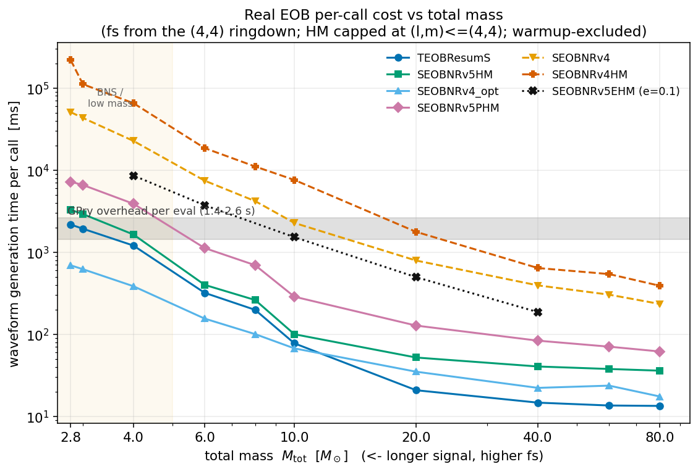
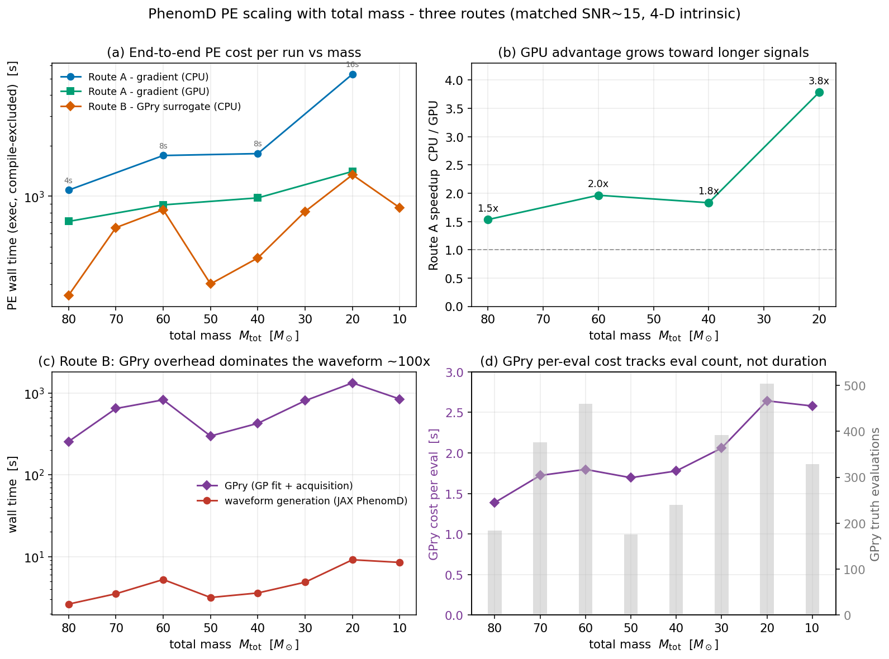
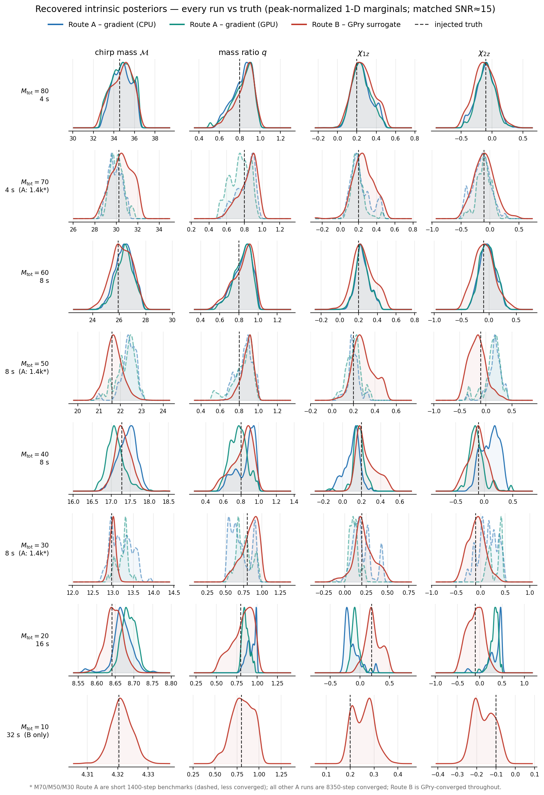

<style>
:root{
  --bg:#F5F6F8; --surface:#FFFFFF; --ink:#151A21; --muted:#57616D;
  --accent:#0B6E77; --accent-soft:#0b6e7714; --amber:#A9691A; --amber-soft:#a9691a14;
  --line:#E4E7EC; --figbg:#FFFFFF; --figline:#E7E9EE;
  --sans:system-ui,-apple-system,"Segoe UI",Roboto,Helvetica,Arial,sans-serif;
  --mono:ui-monospace,"SF Mono","JetBrains Mono",Menlo,Consolas,monospace;
}
@media (prefers-color-scheme:dark){
  :root{
    --bg:#0E1116; --surface:#161B22; --ink:#E7ECF2; --muted:#9AA6B4;
    --accent:#43BBC2; --accent-soft:#43bbc21f; --amber:#DCA457; --amber-soft:#dca45720;
    --line:#252B34; --figbg:#FBFBFC; --figline:#20262E;
  }
}
:root[data-theme="light"]{
  --bg:#F5F6F8; --surface:#FFFFFF; --ink:#151A21; --muted:#57616D;
  --accent:#0B6E77; --accent-soft:#0b6e7714; --amber:#A9691A; --amber-soft:#a9691a14;
  --line:#E4E7EC; --figbg:#FFFFFF; --figline:#E7E9EE;
}
:root[data-theme="dark"]{
  --bg:#0E1116; --surface:#161B22; --ink:#E7ECF2; --muted:#9AA6B4;
  --accent:#43BBC2; --accent-soft:#43bbc21f; --amber:#DCA457; --amber-soft:#dca45720;
  --line:#252B34; --figbg:#FBFBFC; --figline:#20262E;
}
*{box-sizing:border-box}
body{background:var(--bg);color:var(--ink);font-family:var(--sans);
  line-height:1.6;-webkit-font-smoothing:antialiased;margin:0}
.report{max-width:960px;margin:0 auto;padding:clamp(1.4rem,4vw,3.5rem) clamp(1.1rem,4vw,2rem) 4rem}
.eyebrow{font-family:var(--mono);font-size:.72rem;letter-spacing:.14em;text-transform:uppercase;
  color:var(--accent);font-weight:600;margin:0 0 .7rem}
h1{font-size:clamp(1.75rem,4.4vw,2.7rem);line-height:1.08;letter-spacing:-.02em;font-weight:700;
  margin:0 0 .8rem;text-wrap:balance}
.lede{font-size:clamp(1.02rem,2.2vw,1.18rem);color:var(--muted);max-width:64ch;margin:0}
.lede strong{color:var(--ink);font-weight:600}
.rule{height:1px;background:var(--line);border:0;margin:2.4rem 0}
.stats{display:grid;grid-template-columns:repeat(auto-fit,minmax(180px,1fr));gap:1px;
  background:var(--line);border:1px solid var(--line);border-radius:14px;overflow:hidden;margin:2.2rem 0 .4rem}
.stat{background:var(--surface);padding:1.15rem 1.25rem;display:flex;flex-direction:column;gap:.35rem}
.stat .n{font-family:var(--mono);font-size:1.7rem;font-weight:600;letter-spacing:-.01em;
  color:var(--ink);font-variant-numeric:tabular-nums;line-height:1}
.stat .n.amber{color:var(--amber)}
.stat .k{font-size:.83rem;color:var(--muted);line-height:1.4}
section{margin-top:3rem}
h2{font-size:1.42rem;letter-spacing:-.01em;font-weight:700;margin:0 0 .3rem;text-wrap:balance}
h2 .tag{font-family:var(--mono);font-size:.7rem;font-weight:600;letter-spacing:.1em;text-transform:uppercase;
  color:var(--accent);background:var(--accent-soft);padding:.2rem .5rem;border-radius:6px;
  vertical-align:middle;margin-left:.6rem;position:relative;top:-.15rem}
.sub{color:var(--muted);margin:.1rem 0 1.3rem;max-width:66ch}
p{max-width:68ch}
.figure{background:var(--figbg);border:1px solid var(--figline);border-radius:14px;
  padding:.9rem;overflow-x:auto;box-shadow:0 1px 2px rgba(20,25,35,.04)}
.figure img{display:block;width:100%;height:auto;max-width:100%;border-radius:6px}
.figure.tall{max-height:82vh;overflow-y:auto}
.caption{font-size:.82rem;color:var(--muted);margin:.75rem .25rem 0;font-family:var(--mono);line-height:1.5}
ul.read{list-style:none;padding:0;margin:1.3rem 0 0;display:flex;flex-direction:column;gap:.7rem}
ul.read li{padding-left:1.35rem;position:relative;color:var(--ink);max-width:70ch}
ul.read li::before{content:"";position:absolute;left:0;top:.62em;width:7px;height:7px;border-radius:2px;
  background:var(--accent);transform:rotate(45deg)}
ul.read li.warn::before{background:var(--amber)}
ul.read b,ul.read code{font-family:var(--mono);font-weight:600;font-size:.9em}
code{font-family:var(--mono);background:var(--accent-soft);padding:.08em .38em;border-radius:5px;font-size:.86em}
.tbl{width:100%;border-collapse:collapse;margin:1.4rem 0 .3rem;font-size:.9rem}
.tbl th,.tbl td{text-align:left;padding:.55rem .7rem;border-bottom:1px solid var(--line)}
.tbl thead th{font-family:var(--mono);font-size:.72rem;letter-spacing:.06em;text-transform:uppercase;
  color:var(--muted);font-weight:600}
.tbl td:first-child{font-family:var(--mono);font-weight:600}
.tbl td.x{font-family:var(--mono);font-variant-numeric:tabular-nums;color:var(--amber);font-weight:600}
.tbl tr:last-child td{border-bottom:0}
.tblwrap{overflow-x:auto;border:1px solid var(--line);border-radius:12px;padding:0 .3rem;background:var(--surface)}
.takeaway{background:var(--surface);border:1px solid var(--line);border-left:3px solid var(--accent);
  border-radius:12px;padding:1.3rem 1.4rem;margin-top:1.5rem}
.takeaway h3{margin:0 0 .5rem;font-size:1.05rem}
.takeaway p{margin:.4rem 0;color:var(--ink)}
.takeaway .phase{font-family:var(--mono);font-size:.82rem;color:var(--accent);margin-top:.7rem}
footer{margin-top:3.4rem;padding-top:1.4rem;border-top:1px solid var(--line);
  font-size:.8rem;color:var(--muted);font-family:var(--mono);line-height:1.7}
</style>

<main class="report">
  <p class="eyebrow">GPry-fusion · §D4 profiling checkpoint · measured</p>
  <h1>Where the wall-clock actually goes</h1>
  <p class="lede">The decision to <em>interface</em> GPry rather than rewrite it rested on two
  numbers nobody had measured: how the surrogate loop splits between GP fit and acquisition,
  and what a real case-(2) EOB waveform actually costs per call. Both are now measured &mdash;
  on a Quadro&nbsp;T2000, <strong>warmup- and compile-excluded</strong>, across a total-mass sweep
  from stellar-mass BBH down to BNS &mdash; alongside the recovered posteriors from every run.</p>

  <div class="stats">
    <div class="stat"><span class="n">70&ndash;77%</span><span class="k">of the GPry loop is <b>acquisition</b> (the nested sampler) &mdash; the port target. GP fit is 5&ndash;26%, growing with eval count.</span></div>
    <div class="stat"><span class="n">13&ndash;800<span style="font-size:.6em"> ms</span></span><span class="k">real EOB per call across stellar-mass BBH &mdash; <b>not</b> the assumed 0.5&ndash;10&nbsp;min. Comparable to the JAX PhenomD kernel.</span></div>
    <div class="stat"><span class="n amber">~1.9<span style="font-size:.6em"> s</span></span><span class="k">the per-call cost threshold where the waveform finally overtakes the GPry overhead.</span></div>
    <div class="stat"><span class="n">1.5&rarr;3.8&times;</span><span class="k">Route&nbsp;A GPU speedup, growing from M80 to M20 &mdash; longer FD signals are wider, and width is the GPU's lever.</span></div>
  </div>

  <hr class="rule">

  <section>
    <h2>Real EOB waveform cost <span class="tag">Rec 2</span></h2>
    <p class="sub">Six production time-domain EOB models timed at the injection's intrinsic
    configuration, with the sampling rate set from each waveform's <em>own</em> highest frequency
    content &mdash; the (4,4)-mode ringdown &mdash; not a fixed 2048&nbsp;Hz. Higher-mode models
    capped at (l,m)&le;(4,4). <code>pyseobnr</code> supplies SEOBNRv5.</p>
    <div class="figure">
      
      <p class="caption">Per-call cost vs total mass. Grey band = GPry overhead per eval (1.4&ndash;2.6&nbsp;s). Curves enter it only at low mass; fs rises 2048&rarr;32768&nbsp;Hz as M drops.</p>
    </div>
    <ul class="read">
      <li>Across <b>stellar-mass BBH</b> (M&ge;10) every production model is <b>13&ndash;800&nbsp;ms/call</b> &mdash; 10&sup2;&ndash;10&#8308;&times; cheaper than the assumed minutes, so Route&nbsp;B is GPry-dominated by <b>25&ndash;130&times;</b> and the waveform is not the bottleneck.</li>
      <li>The waveform overtakes the ~1.9&nbsp;s/eval GPry overhead <b>only at low mass</b>, and the crossover mass is strongly model-dependent (table below).</li>
      <li class="warn">Eccentricity is the real cost multiplier: <b>SEOBNRv5EHM</b> costs 4.5&ndash;12&times; its aligned counterpart &mdash; but even at M4/e=0.3 that is <b>8.6&nbsp;s</b>, seconds not minutes.</li>
    </ul>
    <div class="tblwrap">
      <table class="tbl">
        <thead><tr><th>model</th><th>M=80</th><th>M=20</th><th>M=10</th><th>M=4</th><th>crosses GPry at</th></tr></thead>
        <tbody>
          <tr><td>TEOBResumS</td><td>13 ms</td><td>21 ms</td><td>77 ms</td><td>1.2 s</td><td class="x">M&asymp;3 (BNS)</td></tr>
          <tr><td>SEOBNRv5HM</td><td>36 ms</td><td>52 ms</td><td>100 ms</td><td>1.6 s</td><td class="x">M&asymp;3&ndash;4</td></tr>
          <tr><td>SEOBNRv5PHM</td><td>62 ms</td><td>127 ms</td><td>287 ms</td><td>3.9 s</td><td class="x">M&asymp;4&ndash;5</td></tr>
          <tr><td>SEOBNRv4_opt</td><td>17 ms</td><td>35 ms</td><td>67 ms</td><td>0.4 s</td><td class="x">none in range</td></tr>
          <tr><td>SEOBNRv4</td><td>234 ms</td><td>790 ms</td><td>2.3 s</td><td>22.6 s</td><td class="x">M&asymp;10</td></tr>
          <tr><td>SEOBNRv4HM</td><td>390 ms</td><td>1.8 s</td><td>7.6 s</td><td>65 s</td><td class="x">M&asymp;10&ndash;20</td></tr>
        </tbody>
      </table>
    </div>
  </section>

  <section>
    <h2>PE cost scaling with total mass <span class="tag">3 routes</span></h2>
    <p class="sub">End-to-end parameter-estimation cost across the matched-SNR&approx;15 mass sweep,
    4-D intrinsic (M, q, &chi;&#8321;&#8340;, &chi;&#8322;&#8340;). Route&nbsp;A gradient shown for the
    converged full runs (8350 steps: M80/60/40/20); Route&nbsp;B GPry surrogate for all masses.
    Wall time is execution only &mdash; JIT/XLA compile excluded on both backends.</p>
    <div class="figure">
      
      <p class="caption">(a) cost per run · (b) Route&nbsp;A GPU speedup · (c) Route&nbsp;B waveform vs GPry overhead · (d) GPry per-eval cost against truth-eval count (bars).</p>
    </div>
    <ul class="read">
      <li><b>(a)</b> Route&nbsp;B's cost is non-monotone in mass because it tracks the GPry <em>eval count</em> (176&ndash;504, set by posterior sharpness), not the signal duration.</li>
      <li><b>(b)</b> The <b>GPU advantage grows</b> 1.5&rarr;3.8&times; toward lower mass / longer signals: larger n<sub>freq</sub> gives the GPU more width to exploit &mdash; the reverse of the ESIGMA ODE result.</li>
      <li><b>(c)</b> In Route&nbsp;B the GPry overhead (GP fit + acquisition) outweighs the JAX waveform by <b>~100&times;</b> at every mass &mdash; the flat lower curve is the waveform.</li>
      <li><b>(d)</b> GPry per-eval cost rises with the accumulated training-set size (bars), the O(N&sup2;&ndash;N&sup3;) GP signature &mdash; independent of duration.</li>
    </ul>
  </section>

  <section>
    <h2>Recovered posteriors &mdash; every run <span class="tag">validation</span></h2>
    <p class="sub">All intrinsic posteriors from every run on the sweep: eight total masses (rows)
    &times; the four intrinsic parameters (columns), each route overlaid against the injected
    truth (dashed). Peak-normalized 1-D marginals.</p>
    <div class="figure tall">
      
      <p class="caption">Rows M80&rarr;M10; columns M, q, &chi;&#8321;&#8340;, &chi;&#8322;&#8340;. Dashed A curves (M70/M50/M30) are short 1.4k-step benchmarks; M10 is Route&nbsp;B only.</p>
    </div>
    <ul class="read">
      <li><b>Route&nbsp;B recovers the truth across all eight masses</b>, including where Route&nbsp;A does not &mdash; the surrogate is the robust route on the sweep.</li>
      <li>At the higher masses (M80/M60/M40) all three routes <b>agree and bracket truth</b>, and the two Route&nbsp;A backends (CPU vs GPU) overlie each other &mdash; a clean backend cross-check.</li>
      <li class="warn">The <b>dashed</b> M70/M50/M30 Route&nbsp;A curves are the short 1400-step benchmarks: visibly multi-lobed / under-converged &mdash; a sampling artifact, not physics (they were never run to convergence).</li>
      <li class="warn">At <b>M20</b> (sharp 16&nbsp;s posterior) the converged Route&nbsp;A spins sit <em>off</em> truth (&chi;&#8321;&#8340;&asymp;&minus;0.15) while Route&nbsp;B recovers &chi;&#8321;&#8340;=+0.20, &chi;&#8322;&#8340;=&minus;0.09 (truth +0.2/&minus;0.1) &mdash; the gradient sampler is tripped by the sharp spin structure; the marginalized surrogate is not.</li>
    </ul>
  </section>

  <section>
    <h2>What it changes for D4 <span class="tag">Rec 1 + 2</span></h2>
    <p>The GPry split, measured at two eval counts, is <b>N-dependent</b>: acquisition is
    <b>77%</b> at N=136 (M80) and <b>70%</b> at N=560 (M20) &mdash; always the dominant cost &mdash;
    while the GP fit's O(N&sup3;) Cholesky grows from 5% to 26%. So the acquisition nested sampler
    is the port to do first (it is <code>vmap</code>/BlackJAX-friendly on a cached factorization,
    where the poor-consumer-GPU-fp64 objection does not apply); the GP-fit port only matters at the
    high-dimensional end.</p>
    <div class="takeaway">
      <h3>A cost threshold, not a case-(1)/case-(2) dichotomy</h3>
      <p>The port trigger is a waveform cost of <b>~1.9&nbsp;s/call</b>. Both cheap JAX FD models
      <em>and</em> standard aligned-spin EOB across the entire stellar-mass BBH range sit below it,
      so a <b>JAX/BlackJAX acquisition nested sampler is a broadly worthwhile partial port</b> &mdash;
      it cuts real PE wall-clock for BBH with any of these waveform families. The waveform-dominated
      regime the design assumed is real, but <b>relocated</b> to BNS / very-low-mass and the slow
      higher-mode variants, where the surrogate's value is exactly its original one: minimizing
      expensive calls.</p>
      <p class="phase">&rarr; added to the plan as Phase&nbsp;2.5 (gated G2.5: reproduce GPry-native proposals AND &ge;2&times; acquisition speedup, else it stays off).</p>
    </div>
  </section>

  <footer>
    Quadro T2000 (4&nbsp;GB) · lalsuite-dev / jax 0.10.2 · matched SNR&approx;15, PhenomD injections ·
    warmup + JIT/XLA compile excluded · fs from the (4,4) ringdown ·
    figures regenerated by examples/figures/make_d4_figures.py from examples/output/*.npz + phenomd_eob_call_timing.json
  </footer>
</main>
